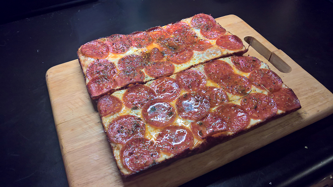

Detroit Style Pizza

This detroit style pizza will quickly become one of your weekly go-to recipes!
After searching and searching for a great homemade pizza I finally came across this recipe and it's changed everything.
It takes about 2 1/2 hours from start but maybe about 20 minutes of actual work. We'll also be making the sauce to go along with it.
All your friends will be totally impressed!
Ingredients
Dough:
- 200g bread flour
- 50g whole wheat flour
- 5g salt
- 4g instant yeast
- 175g water
- 15g oil
Sauce:
- 800g fresh or canned tomatoes
- 15g butter
- 15g olive oil
- 3 garlic cloves
- 1/4 onion
- Salt (to taste)
- Fresh basil
Toppings:
- 175g mozzarella cheese
- Calabrian Chiles (minced)
- Sprinkle of oregano
Steps:
- Add the dough ingredients to a bowl except for the olive oil,
and mix until a sticky dough forms. Set a bowl over top and let rest for 15 minutes.
- Add the sauce ingredients to a saucepot and place on low heat with a lid over top.
Simmer for 20 to 30 minutes - Use this time to do dishes, watch tv, grab a workout
- Back at the dough, stretch and knead for about 5 minutes until it passes the windowpane test - tear
off a piece and stretch it until very thin and translucent without tearing.
Set the bowl over the top and let rise for 30 minutes.
Stir the sauce and remove the lid, let simmer for another 30 minutes. -
Use this time to do dishes, watch tv, grab a workout
- Turn off the sauce and blend with an immersion blender.
Add the chopped basil and adjust the seasoning to taste.
Store in the fridge until ready to use.
- Get out a Detroit-style pizza pan or quarter baking sheet and add the olive oil.
Toss the dough in and stretch to the edges until it starts to spring back.
Let rest for 20 minutes. Preheat the oven to 450 F (232 C) - Use this time to do dishes,
watch tv, grab a workout.
- Top the pizza by laying the chiles and oregano down first and follow with the shredded mozzarella.
Spoon over the sauce in 3 strips. Bake for about 20 minutes until the crust is golden brown and
crispy and the cheese is bubbly.
- Slide the cooked pizza onto a cooling rack for 5 minutes before slicing and enjoying.